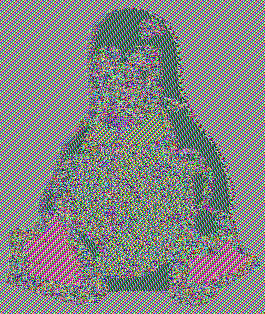

1. Hashing vs. Criptografia: A Distinção Crucial
Na Lição 0001 e 0002, estudamos o Hashing (bcrypt/Argon2id), que é estritamente unidirecional. Ninguém nunca precisa saber o texto original de uma senha para autenticar um usuário.
Porém, no backend você lida com dados que o sistema precisa recuperar e ler posteriormente: CPFs, números de cartão de crédito para cobrança, prontuários de saúde e chaves de API de terceiros. Para esses casos, o hash não serve: você é obrigado a usar Criptografia Simétrica.
A Anatomia do AES (Advanced Encryption Standard)
O AES é uma cifra de bloco simétrica (opera em blocos fixos de 128 bits) aprovada mundialmente pelo NIST. Mas o algoritmo matemático puro do AES apenas cifra um bloquinho de cada vez. A forma como encadeamos múltiplos blocos de dados é chamada de Modo de Operação.
2. Por que Modos Antigos Falham: O Desastre do ECB e CBC
❌ Modo ECB (Electronic Codebook) - Proibido!
No modo ECB, cada bloco de 16 bytes do dado é criptografado de forma isolada com a mesma chave. Se o dado tiver partes repetidas (como pixels do mesmo tom em uma imagem ou campos com zeros à esquerda), o texto cifrado gerará exatamente os mesmos blocos repetidos.
O Caso Famoso: Criptografar uma imagem do mascote do Linux (Tux) em ECB gera um arquivo todo cifrado onde a silhueta inteira do pinguim continua perfeitamente visível a olho nu! Não há dispersão.

AES-ECB (Silhueta visível)⚠️ Modo CBC (Cipher Block Chaining) - Cuidado!
O CBC resolveu o problema do ECB encadeando os blocos com um IV (Vetor de Inicialização). No entanto, o CBC não oferece autenticidade nem integridade. Um invasor que consiga interceptar o tráfego ou adulterar o banco de dados pode manipular bits do texto cifrado para enganar a aplicação (ataques como Padding Oracle e adulteração de valores numéricos).
3. A Solução Moderna: AES-GCM (Criptografia Autenticada - AEAD)
A OWASP e as principais normas de segurança (PCI-DSS, HIPAA, LGPD) recomendam cifras do tipo AEAD (Authenticated Encryption with Associated Data). O rei absoluto desse padrão é o AES-256-GCM (Galois/Counter Mode).
No AES-GCM, o resultado da criptografia não é apenas o texto cifrado. Ele produz obrigatoriamente 4 elementos integrados:
Laboratório Interativo: Criptografia e Adulteração com AES-256-GCM Real
Web Crypto API NativaEste laboratório executa criptografia real AES-256-GCM diretamente na CPU do seu navegador.